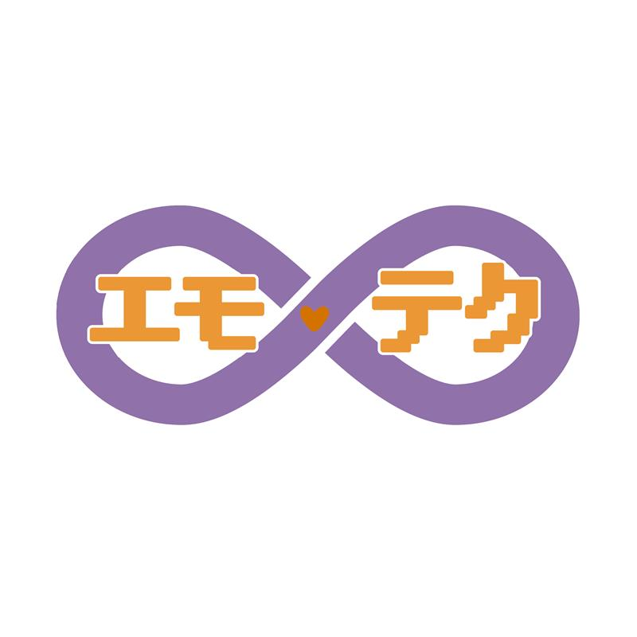
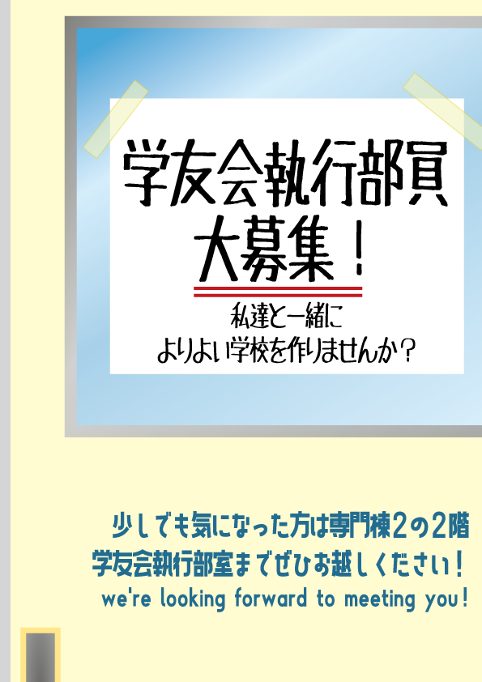
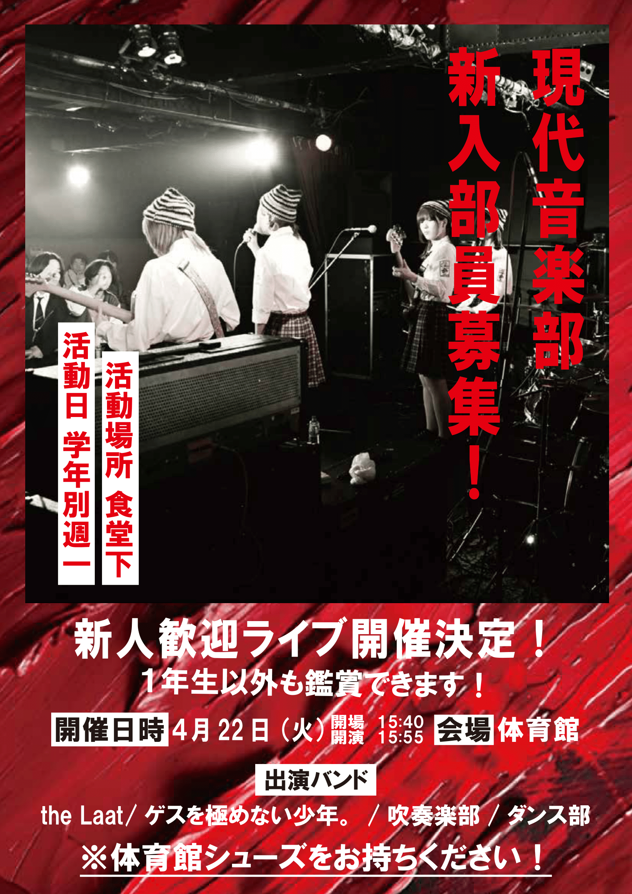
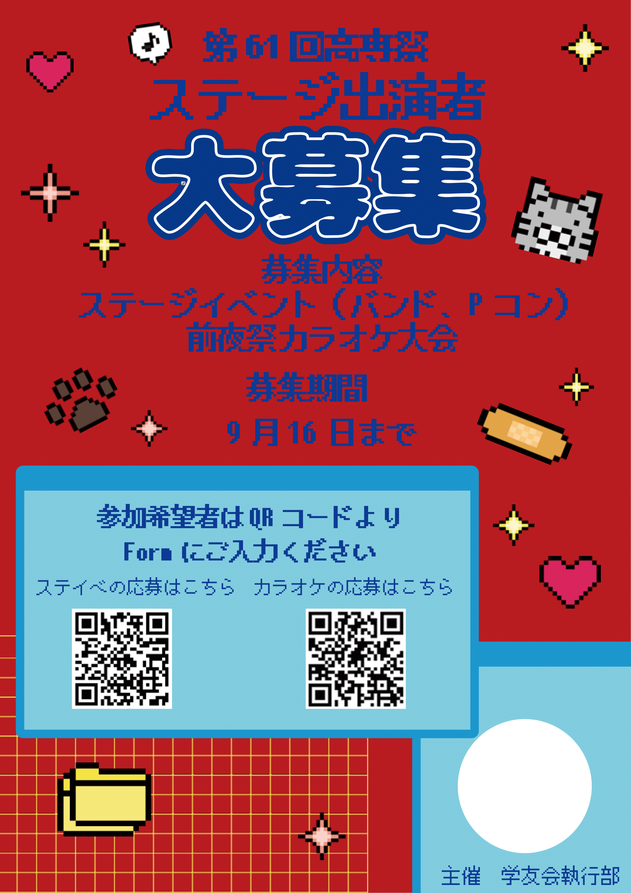
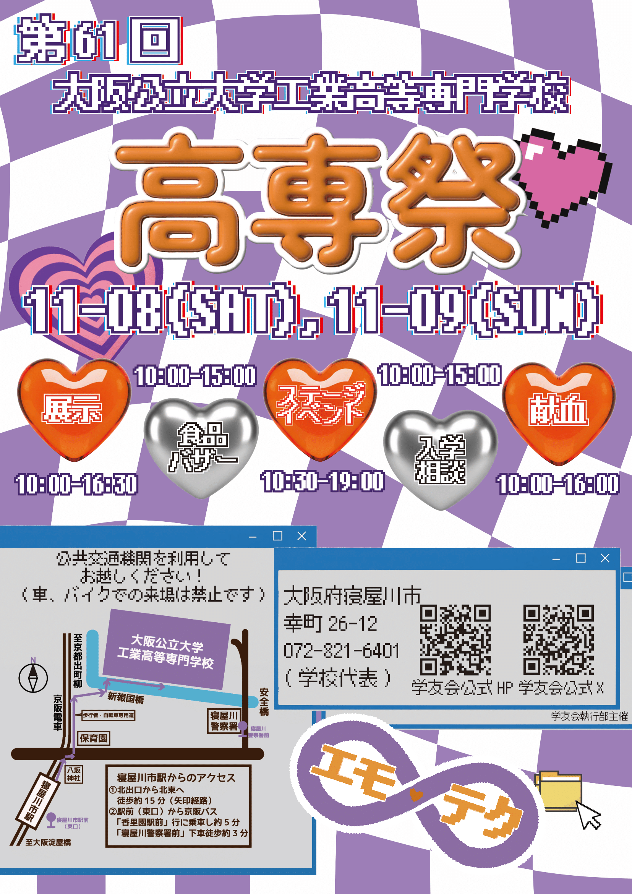

♡About me♡
公大高専3年 Iコース
現代音楽部
♰解き放たれし冥界のモンスター♰
ベースとボーカル
学友会執行部 広報課
趣味はおいしいものを食べること
skill
プログラミング
- Python
- 基本文法習得済み。GUIアプリ・ゲーム制作、データ分析ライブラリの使用経験あり。
- Arduino
- 授業でのハードウェア制御経験あり。
- HTML/CSS
- Webサイト構築・レスポンシブ対応（独学）。
デザイン・その他
- Illustrator
- 学友会執行部にてポスター制作を担当。独学でイベントロゴの作成も可能。
- CLIP STUDIO PAINT EX
- イラスト作成、ロゴデザインに使用。
projects
プログラミング


ベース用チューナー
GitHubを見る
制作時期：2024年12月～2025年1月
日常使いできるシンプルなチューナーアプリ。
Python (pygame, sounddevice, numpy, librosa) 使用。
マイク入力から周波数を解析し、E,A,D,G音階とのズレを数値化・可視化しました。


ロゴデザイン
※画像をタップすると詳細が表示されます

第59回高専祭 謎解きロゴ

高専祭展示 2⁷-4ロゴ

第60回高専祭 テーマロゴ
ポスター制作





